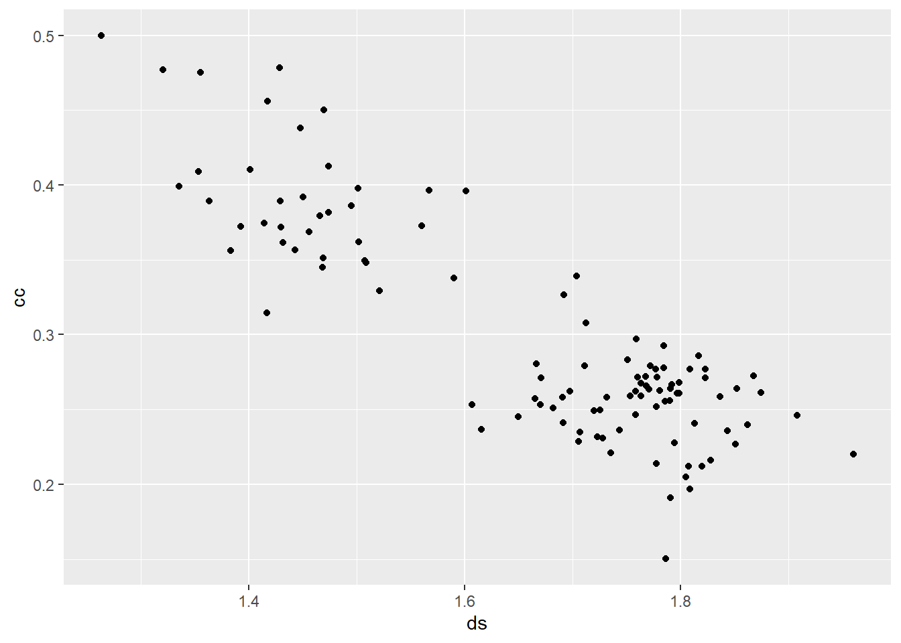
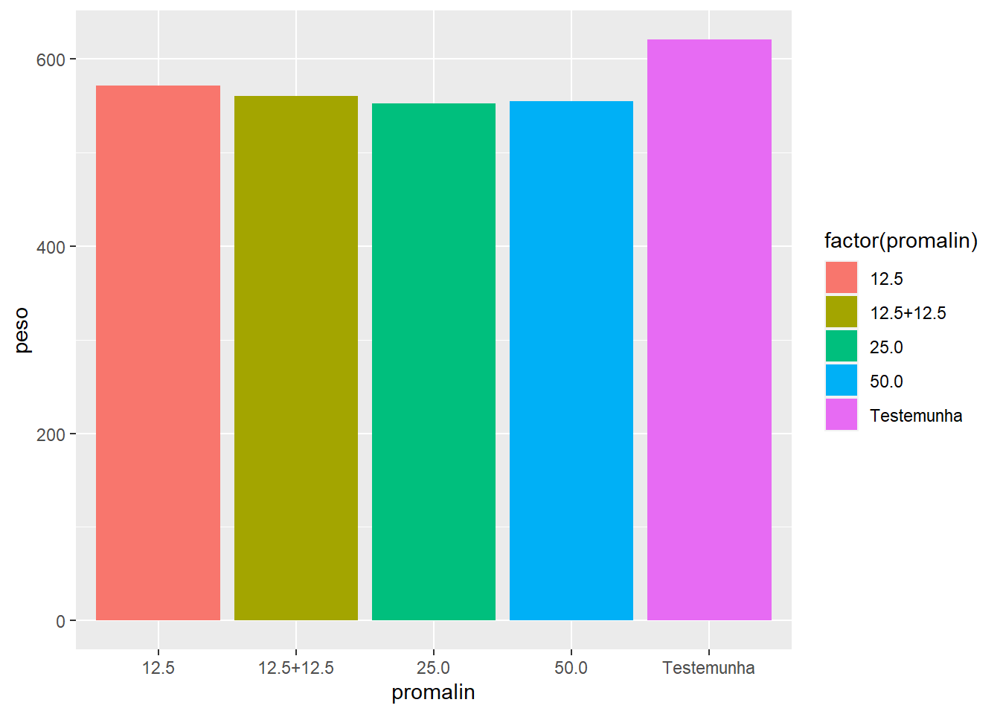
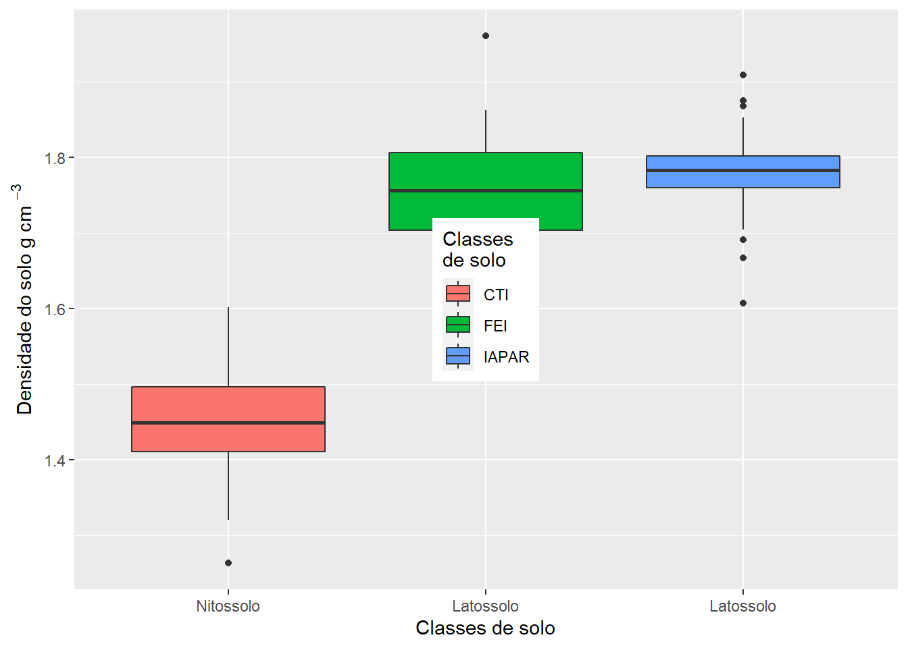
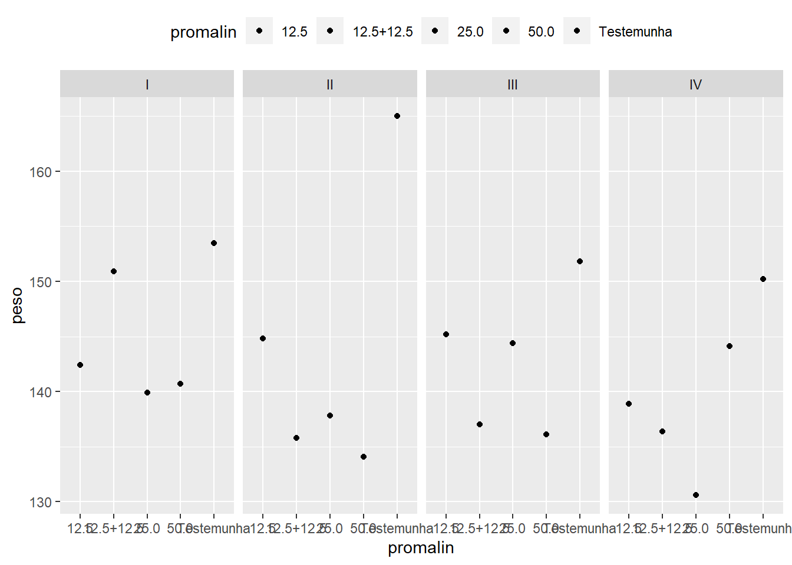
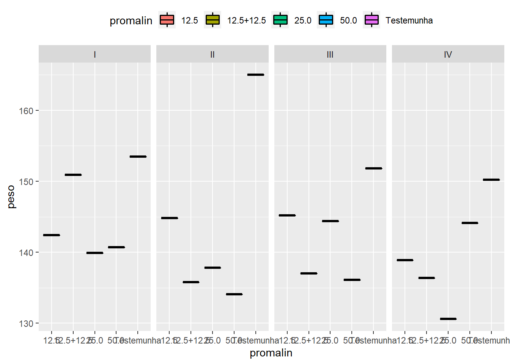
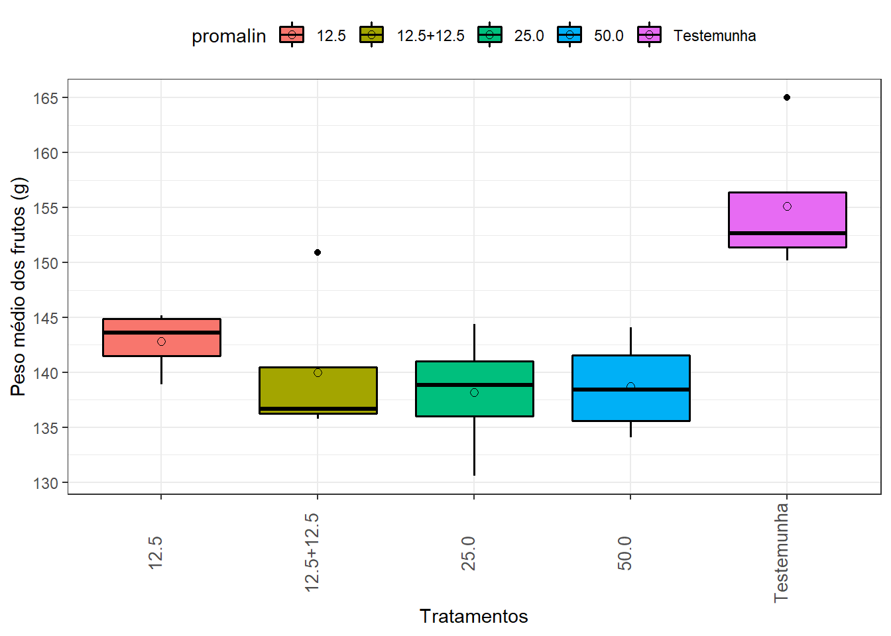

6 Gráficos com ggplot2
Existem muitas maneiras de fazer Gráficos em R, cada um com suas vantagens e desvantagens. O foco aqui está no pacote ggplot2, que é baseado na Grammar of Graphics (Gramática dos Gráficos) para descrever os gráficos de dados.
Utilize o codigo abaixo para instalar o pacote ggplot2
Sempre carregue o pacote antes de utilizá-lo.
Utilizaremos o banco de dados: dadosfisio
Baixar os dados
Veja as primeiras linhas.
## z x y cota ds cc ma ptotal tibo tibe a
## 1 1 1 1 9.15 1.501258 0.3975615 0.1288555 0.5264170 46.08 26.78 926.3955
## 2 1 1 3 8.95 1.474362 0.3818767 0.1530250 0.5349017 19.20 26.10 383.8130
## 3 1 1 5 8.78 1.469118 0.3514075 0.1851484 0.5365559 172.80 113.92 275.3272
## 4 1 1 7 8.59 1.392845 0.3724094 0.1882073 0.5606167 96.00 74.83 1206.7585
## 5 1 1 9 8.48 1.383309 0.3559554 0.2076696 0.5636250 30.72 37.20 151.4032
## 6 1 1 11 8.41 1.417010 0.3144429 0.2385509 0.5529937 151.32 124.52 368.7992
## b X3 X60 X90 X120
## 1 -0.5290035 518.0810 153.24778 106.20581 73.60416
## 2 -0.4176008 242.5903 92.74121 69.43243 51.98188
## 3 -0.1307566 238.4857 176.48417 161.19222 147.22529
## 4 -0.3764298 798.0272 335.41915 258.38731 199.04648
## 5 -0.2270424 117.9800 69.94649 59.76121 51.05906
## 6 -0.1549382 311.0754 217.73464 195.56291 175.64890O código abaixo é um exemplo de um gráfico bem simples, construído a partir das duas principais camadas. O eixo y representa a densidade do solo e ao eixo x a variavel capacidade de campo.

Aqui, essas formas geomótricas são pontos, selecionados pela função geom_point(), gerando, assim, um gráfico de dispersão.
A função aes() vem da palavra Aesthetics define a relação entre os dados e cada aspecto visual do gráfico, como qual variavel será representada no eixo x, qual será representada no eixo y, a cor e o tamanho dos componentes com a função colour.
Outro aspecto que pode ser mapeado nesse gráfico é a cor dos pontos.

Agora, a variável z (classe de solo) foi mapeada a cor dos pontos, sendo que pontos vermelhos correspondem ao Nitossolo (valor 1) e pontos azuis e verdes os Latossolos. Observe que inserimos a variável z como um fator, pois temos interesse apenas nos valores “1”, “2” e “3”. No entanto, tambem podemos mapear uma variável contínua a cor dos pontos:

A porosidade do solo (ptotal), é representado pela tonalidade da cor azul.
Também podemos mapear o tamanho dos pontos a uma variável de interesse.
Outros geoms bastante utilizados:
- geom_line: para retas definidas por pares (x,y)
- geom_abline: para retas definidas por um intercepto e uma inclinação
- geom_hline: para retas horizontais
- geom_boxplot: para boxplots
- geom_histogram: para histogramas
- geom_density: para densidades
- geom_area: para áreas
- geom_bar: para barras
Veja a seguir como é fácil gerar diversos Gráficos diferentes utilizando a mesma estrutura do gráfico de dispersão acima:
## `stat_bin()` using `bins = 30`. Pick better value with `binwidth`.

gra + geom_density() +
geom_histogram (aes(y=..density..), binwidth=.05,
colour="black", fill="white") +
geom_density(alpha=.2, fill="#FF6666")Exemplo Baixar dados via web.
Criar gráficos.
Nestes exemplos, a altura da barra representará o valor em uma coluna do quadro de dados. Isso é feito usando stat="identity" em vez do padrão stat="bin".

Gráfico de barras agrupados

Empilhado

6.1 Personalizando os gráficos
6.1.1 Cores
O aspecto colour do boxplot, muda a cor do contorno. Para mudar o preenchimento, basta usar o fill.
Usando colour
Usando fill
Mude a cor dos objetos sem atribuir a uma variavel. Para isso, observe que os aspectos colour e fill são especificados fora do aes().

6.1.2 Eixos
Para alterar os rotulos dos eixos acrescentamos as funções xlab() ou ylab().
box <- ggplot(data = fisio, aes(x = factor(z), y = ds, fill = factor(z))) +
geom_boxplot()+
xlab("Classes de solo") +
ylab(expression(paste(Densidade~do~solo," g cm "^{-3} )))Alterar os limites dos Gráficos usamos as funções xlim() e ylim().
Especifique marcas de escala diretamente

Troque os eixos x e y
Definir rótulos de marca de escala
6.1.3 Legenda
Remover legenda para uma estética específica (fill)
Também pode ser feito ao especificar a scale

Isso remove todas as legendas

Alterando a ordem dos itens na legenda
Modificando o texto de legenda de tétulos e rótulos
box3 <- box2 +
scale_fill_discrete(name="Classes\nde solo",
breaks=c("1", "2", "3"),
labels=c("CTI", "FEI", "IAPAR"))Modificando a aparência do título e dos rótulos da legenda

Modificando a caixa de legenda


Mudando a posição da legenda
Posicione a legenda no gráfico, em que x, y é 0,0 (canto inferior esquerdo) a 1,1 (canto superior direito)
Defina o “ponto de ancoragem” da legenda (o canto inferior esquerdo é 0,0; o canto superior direito é 1,1)

Coloque o canto inferior direito da caixa de legenda no canto inferior direito do gráfico

6.1.4 Título

6.1.5 Facets
Outra funcionalidade muito importante do ggplot2 é o uso de facets.
Você quer dividir seus dados por uma ou mais variáveis e plotar os subconjuntos de dados juntos.

Podemos colocar os graficos lado a lado também.
6.2 Exemplos
6.2.1 Regressão
Efeito do Gesso no Peso de grãos de feijão Estudo sobre o efeito do gesso no peso de grãos de feijo (Phaseolus vulgaris L.) feito por Ragazzi (1979). O experimento foi instalado em delineamento inteiramente casualizado e foram estudados 7 n?veis de gesso, de 0 a 300, igualmente espaados em 50 kg ha-1.
Baixar dados
Verificar a estrutura dos dados
## 'data.frame': 28 obs. of 3 variables:
## $ gesso: int 0 0 0 0 50 50 50 50 100 100 ...
## $ rept : int 1 2 3 4 1 2 3 4 1 2 ...
## $ peso : num 135 140 148 132 162 ...Analise de regressão
##
## Call:
## lm(formula = gesso ~ peso, data = dados)
##
## Residuals:
## Min 1Q Median 3Q Max
## -120.41 -70.79 -31.57 74.22 179.24
##
## Coefficients:
## Estimate Std. Error t value Pr(>|t|)
## (Intercept) -451.935 282.012 -1.603 0.121
## peso 3.849 1.799 2.139 0.042 *
## ---
## Signif. codes: 0 '***' 0.001 '**' 0.01 '*' 0.05 '.' 0.1 ' ' 1
##
## Residual standard error: 95.7 on 26 degrees of freedom
## Multiple R-squared: 0.1496, Adjusted R-squared: 0.1169
## F-statistic: 4.575 on 1 and 26 DF, p-value: 0.04201Extrair a equação do modelo
Criando o gráfico
ggplot(dados,aes(x=gesso,y=peso,color=peso)) +
geom_point(size=2.9,shape=19, colour="grey10") +
theme_bw(base_size = 10) +
ylab(expression(paste( "Peso (g)" ))) +
xlab(expression(paste(Gesso," kg ha"^{-1} ))) +
annotate("text", label=eqn, parse=TRUE, x=Inf, y=-Inf,
hjust=1., vjust=-.5, size = 5) +
stat_smooth(method = lm, se = T, colour="red", size=.85)## `geom_smooth()` using formula 'y ~ x'
6.2.2 Delineamento em blocos casualizados- DBC
Efeito do Promalin sobre Furtos de Macieira
Resultados de um experimento instalado na Fazenda Chapadão, no município de Angatuba - SP. O delineamento experimental foi o de blocos casualizados, sendo as parcelas constituídas de 4 plantas espaçadas de 6 x 7 metros, com 12 anos de idade na época da instalação do experimento.
Baixar dados
Verificar Estrutura dos dados
## 'data.frame': 20 obs. of 3 variables:
## $ promalin: Factor w/ 5 levels "12.5","12.5+12.5",..: 1 3 4 2 5 1 3 4 2 5 ...
## $ bloco : Factor w/ 4 levels "I","II","III",..: 1 1 1 1 1 2 2 2 2 2 ...
## $ peso : num 142 140 141 151 154 ...Transformação categorica
Estatistísca descritiva
## promalin bloco peso
## 12.5 :4 I :5 Min. :130.6
## 12.5+12.5 :4 II :5 1st Qu.:136.8
## 25.0 :4 III:5 Median :141.6
## 50.0 :4 IV :5 Mean :143.0
## Testemunha:4 3rd Qu.:146.4
## Max. :165.0Ativar o pacote ggplot
Fazer o gráfico
ggplot(dados,aes(x=promalin ,y=peso, fill=promalin)) +
geom_boxplot(size=0.55,shape=19, colour="black") +
theme(legend.position="top") 
Analisando os blocos
ggplot(dados,aes(x=promalin ,y=peso, fill=promalin)) +
geom_point() +
theme(legend.position="top") +
facet_wrap(~bloco,ncol=4)
Inserindo medias
ggplot(dados,aes(x=promalin ,y=peso, fill=promalin)) +
geom_boxplot(size=0.55,shape=19, colour="black") +
theme(legend.position="top") +
facet_wrap(~bloco,ncol=4) 
Inserindo legenda nos eixos
ggplot(dados,aes(x=promalin,y=peso, fill=promalin)) +
geom_boxplot(size=0.55,shape=19, colour="black") +
theme(legend.position="top") +
xlab("Tratamentos") +
ylab("Peso médio dos frutos (g)") 
Inserindo legenda nos eixos
ggplot(dados,aes(x=promalin ,y=peso, fill=promalin)) +
geom_boxplot(size=0.55,shape=19, colour="black") +
theme(legend.position="top") +
stat_summary(fun.y=mean, geom="point",shape=1,size=2) +
xlab("Tratamentos") +
ylab("Peso médio dos frutos (g)") +
theme(panel.grid.minor = element_line(colour = "red", linetype = "dotted")) ## Warning: `fun.y` is deprecated. Use `fun` instead.
Inserindo tema_bw preto e branco
ggplot(dados,aes(x=promalin ,y=peso, fill=promalin)) +
geom_boxplot(size=0.55,shape=19, colour="black") +
theme(legend.position="top") +
stat_summary(fun.y=mean, geom="point",shape=1,size=2) +
xlab("Tratamentos") +
ylab("Peso médio dos frutos (g)") +
theme_bw() ## Warning: `fun.y` is deprecated. Use `fun` instead.Inserindo legenda no topo
ggplot(dados,aes(x=promalin ,y=peso, fill=promalin)) +
geom_boxplot(size=0.55,shape=19, colour="black") +
theme(legend.position="top") +
stat_summary(fun.y=mean, geom="point",shape=1,size=2) +
xlab("Tratamentos") +
ylab("Peso médio dos frutos (g)") +
theme_bw() +
theme(legend.position="top") ## Warning: `fun.y` is deprecated. Use `fun` instead.Mudando escala do eixo y
ggplot(dados,aes(x=promalin ,y=peso, fill=promalin)) +
geom_boxplot(size=0.55,shape=19, colour="black") +
theme(legend.position="top") +
stat_summary(fun.y=mean, geom="point",shape=1,size=2) +
xlab("Tratamentos") +
ylab("Peso médio dos frutos (g)") +
theme_bw() +
theme(legend.position="top") +
scale_y_continuous(breaks=seq(0, 180, 5)) +
theme( axis.text.x = element_text(angle=90, vjust=0, size=10))## Warning: `fun.y` is deprecated. Use `fun` instead.6.2.3 Dados Climáticos
Dados climáticos de Rondonópolis - MT
Baixar dados no banco de dados o arquivo roo.xlsx
## 'data.frame': 4337 obs. of 11 variables:
## $ dd : int 1 1 2 3 4 5 6 7 8 9 ...
## $ mm : int 1 2 2 2 2 2 2 2 2 2 ...
## $ ano : int 1998 1998 1998 1998 1998 1998 1998 1998 1998 1998 ...
## $ Prec : num NA 8.2 51 0.6 0 0 0 2.4 NA 0.8 ...
## $ Tmax : num 30 35.6 31.8 35.4 35.6 36.4 36.8 36.8 36.6 35.2 ...
## $ Tmin : num 21.7 21.8 21.8 21.5 22.1 22.5 23.5 23.5 24.3 22.9 ...
## $ n : num NA NA NA NA NA NA NA NA NA NA ...
## $ Tbs : num NA NA 25.1 25 26.6 ...
## $ Tbu : num NA NA 23.9 23 23.9 ...
## $ UR : num NA NA 89.8 86.5 80 ...
## $ Vvento: num NA NA 0.125 0.125 0.275 0.325 0.2 0.175 0.15 0.25 ...Boxplot para tempearatura minima
ggplot(data = roo, aes(x = factor(mm),y = (Tmin)))+
geom_boxplot() +
scale_x_discrete(breaks=c("1", "2", "3", "4", "5", "6", "7", "8", "9", "10", "11","12"),
labels=c("Jan","Fev", "Mar", "Abr", "Mai", "Jun", "Jul", "Ago", "Set", "Out", "Nov", "Dez"))## Warning: Removed 222 rows containing non-finite values (stat_boxplot).
Grafico de distruição de temperatura minima total
## Warning: Removed 222 rows containing non-finite values (stat_density).
Grafico de distribuição de temperatura minima para cada mês
## Warning: Removed 222 rows containing non-finite values (stat_density).6.3 Referência
GROLEMUND, G. WICKHAM, H. R for Data Science Site: http://r4ds.had.co.nz/
SITE: https://www.statmethods.net/index.html
CHANG, W. R Graphics Cookbook: Practical Recipes for Visualizing Data, Publisher: O’Reilly Media, 2002,416 p. Site: http://shop.oreilly.com/pesouct/0636920023135.do
Este Capitulo foi baseado no livro Conhecendo o R: Um visão mais que estatística, e na página do Prof. Paulo Justiniando Ribeiro